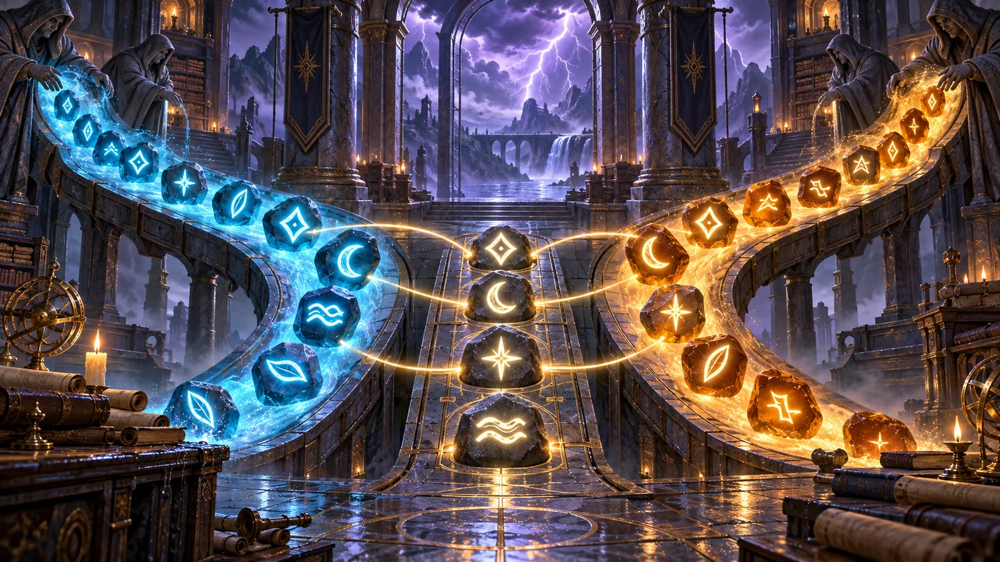
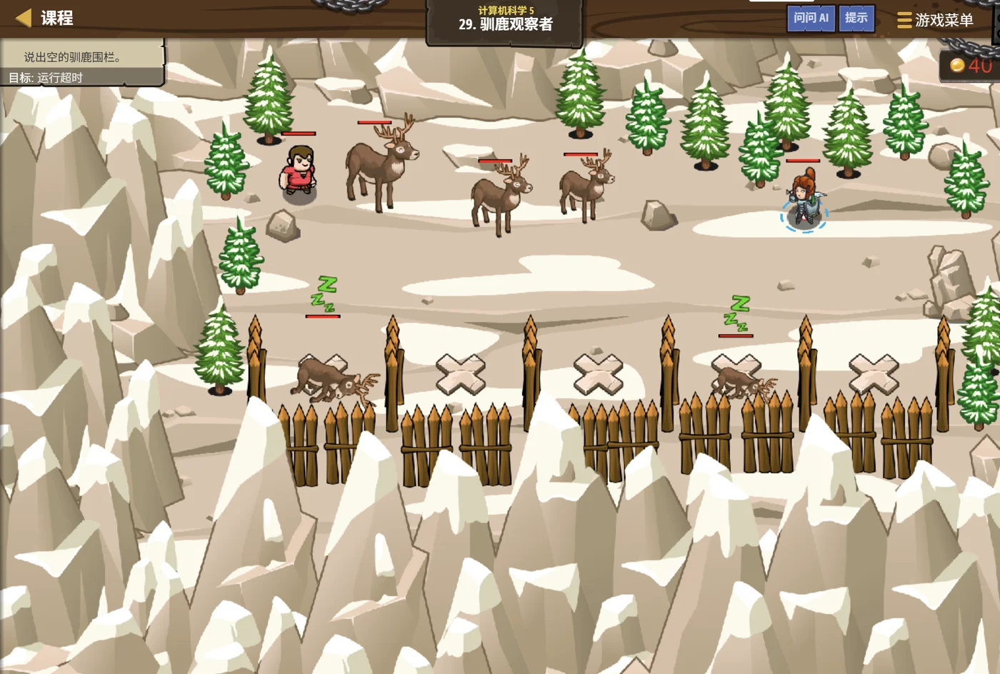

故事：一群驯鹿散落在草原上。指挥官要你依次报出每一只的方位，
好安排巡逻。
你一只只看着，越看越乱。塞尼克说：别慌。列表里已经装好了它们的位置，
你只要按顺序走一遍就行。
扣哒考级 · GESP C++ 七级 · 第 2 单元 | 雷鸣高塔 THUNDERSPIRE
交织雷网 复杂动态规划
Advanced Dynamic Programming

塞尼克
沙海向导 · 你的向导
高塔内部的雷网密密麻麻，电流能从很多条路走到塔底。
每条线上的损耗都不一样，你想找一条最省力的路线。
塞尼克摊开图纸：看，这张图就是一张表格。
每一格的最优解，都由它上面和左边那两格决定。
塞尼克摊开图纸：看，这张图就是一张表格。
每一格的最优解，都由它上面和左边那两格决定。
塞尼克 · 沙海向导
上一级别我们学了"一格一格填"的动态规划。这一单元，表格变成两维的——用 dp[i][j] 表示"走到第 i 行第 j 列时的最优结果"。
别怕，思路和填充一维表格完全一样，只是多了一层循环。
assets/illustrations/py-L7-02-01_thunder_mesh.webp
【配图位】塔内纵横交错的雷电网格俯视图，每个交叉点闪着不同亮度的电光并标有损耗数值；一条较亮的路径从左上角延伸到右下角，沿途的节点依次被点亮，其余线路暗淡。
0 单元导语与目标
Unit Overview
0.1 学习目标
0.2 考纲对照
1学完这个单元，你将能……
- 把一维表格扩展成二维表格
- 为网格类问题定义状态与转移方程
- 解决"路径条数""最小路径和"问题
- 正确处理表格的边界（第一行、第一列）
- 理解字符串 DP 的基本思路
- 读懂二维 DP 的程序并预测结果
- 能写出区间 DP、最长上升子序列与滚动数组优化
2对标 GESP 考纲（C++ 七级）
- 掌握二维数组上的动态规划：状态定义与转移方程
- 掌握网格路径计数、最小路径和等典型问题
- 了解序列型动态规划的思想（如最长公共子序列）
- 掌握区间动态规划、最长上升子序列（LIS）、最长公共子序列（LCS）与滚动数组优化
- 考核目标：能独立写出中等难度的动态规划程序
1 从一维到二维
From 1D to 2D
1.1 从一行到一张表
| 对比项 | 一维 DP（六级） | 二维 DP（七级） |
|---|---|---|
| 状态写法 | dp[i] | dp[i][j] |
| 表格形状 | 一行 | 一张表格 |
| 填表顺序 | 一层循环 | 两层循环（先枚举行，再枚举列） |
| 依赖谁 | 前面一格或几格 | 上面一格、左边一格 |
| 典型问题 | 爬楼梯、找零钱 | 网格路径、最小路径和 |
1.2 二维 DP 的通用模板
二维 DP 的通用模板：
vector<vector<int>> dp(n, vector<int>(m, 0)); // n 行 m 列的表格
for (int i = 0; i < n; i++) { // 枚举行
for (int j = 0; j < m; j++) { // 枚举列
dp[i][j] = 由 dp[i-1][j] 和 dp[i][j-1] 推出来的值;
}
}
2 网格路径问题
Grid Paths
2.1 每格等于上面加左边
经典问题：从左上角走到右下角，每次只能向右或向下走一步，一共有多少条路？
图 2（SVG）：路径计数——每格等于"上面 + 左边"
路径计数的完整代码
C++
int n = 4, m = 4;
vector<vector<int>> dp(n, vector<int>(m, 0));
// 边界：第一行、第一列都只有一种走法
for (int j = 0; j < m; j++) dp[0][j] = 1;
for (int i = 0; i < n; i++) dp[i][0] = 1;
// 其余格子 = 上面 + 左边
for (int i = 1; i < n; i++) {
for (int j = 1; j < m; j++) {
dp[i][j] = dp[i - 1][j] + dp[i][j - 1];
}
}
cout << dp[n - 1][m - 1] << endl; // 20
OUTPUT 20
2.2 边界为什么要单独处理
边界为什么要单独处理？
因为
先把这些"缺胳膊少腿"的格子填好，后面的循环就能放心写了。
dp[i-1][j] 在第一行时没有"上面"，
dp[i][j-1] 在第一列时没有"左边"。先把这些"缺胳膊少腿"的格子填好，后面的循环就能放心写了。
assets/illustrations/py-L7-02-02_grid_path_scene.webp
【配图位】高塔大厅里悬着一张发光的方格雷网，每个交叉点上都浮着一个数字：左上角的起点写着 1，越往右下数字越大；一名学徒用手指点着某一格，从它正上方和正左方各引出一条细光带汇进这一格。
3 最小路径和
Minimum Path Sum
3.1 只改一行转移
换成另一个问题：每个格子上有个数字，从左上走到右下，让经过的数字之和最小。
代码结构和路径计数几乎一样，只改了转移那一行
C++
int grid[3][3] = {{1, 3, 1},
{1, 5, 1},
{4, 2, 1}};
int n = 3, m = 3;
vector<vector<int>> dp(n, vector<int>(m, 0));
dp[0][0] = grid[0][0]; // 起点
for (int j = 1; j < m; j++) // 第一行：只能从左边来
dp[0][j] = dp[0][j - 1] + grid[0][j];
for (int i = 1; i < n; i++) // 第一列：只能从上边来
dp[i][0] = dp[i - 1][0] + grid[i][0];
for (int i = 1; i < n; i++) {
for (int j = 1; j < m; j++) {
// 从"上面来"和"左边来"里挑更省的那条
dp[i][j] = min(dp[i - 1][j], dp[i][j - 1]) + grid[i][j];
}
}
cout << dp[n - 1][m - 1] << endl; // 7
OUTPUT 7 （路线：1 → 1 → 1 → 1 → 1 → 2 → 1）
3.2 两个问题的对比
两个问题的对比：
路径计数：
最小路径和：
最大路径和：把 min 换成 max 就行。
看！同一套框架，换个"小动作"就能解决不同的问题。这就是 DP 的好处。
路径计数：
dp[i][j] = dp[i-1][j] + dp[i][j-1]（把两条路加起来）最小路径和：
dp[i][j] = min(dp[i-1][j], dp[i][j-1]) + grid[i][j]（挑更省的一条）最大路径和：把 min 换成 max 就行。
看！同一套框架，换个"小动作"就能解决不同的问题。这就是 DP 的好处。
4 两个字符串的 DP
DP on Two Strings
4.1 行列各代表一个串
二维 DP 还有一个重要应用：比较两个字符串。比如求最长公共子序列（LCS）。
图 4（SVG）：两个字符串的 DP 表——行列各代表一个串
最长公共子序列
C++
string s1 = "ABCD";
string s2 = "ACBD";
int n = s1.size(), m = s2.size();
vector<vector<int>> dp(n + 1, vector<int>(m + 1, 0)); // 多开一行一列放"空串"
for (int i = 1; i <= n; i++) {
for (int j = 1; j <= m; j++) {
if (s1[i - 1] == s2[j - 1]) { // 字符相同
dp[i][j] = dp[i - 1][j - 1] + 1;
} else { // 字符不同
dp[i][j] = max(dp[i - 1][j], dp[i][j - 1]);
}
}
}
cout << dp[n][m] << endl; // 3
OUTPUT 3
4.2 为什么多开一行一列
为什么多开一行一列？
因为要表示"空字符串"这种状态——空串和任何串的公共子序列长度都是 0。
下标 0 那一行/列全填 0，后面的循环就不用再操心边界了。
这种"多开一圈"的技巧，在二维 DP 里很常见。
下标 0 那一行/列全填 0，后面的循环就不用再操心边界了。
这种"多开一圈"的技巧，在二维 DP 里很常见。

assets/illustrations/py-L7-02-03_lcs_scene.webp
【配图位】塔内的长桌上摊开两张发光的名册，一张横放、一张竖放，两张纸的每一行每一列在交点上形成一小格，格子里亮着数字；一名学徒拿笔在两串名字之间逐一对照，把相同的字用光点连起来。
4.3 最长上升子序列（LIS）：只看"自己结尾能有多长"
给定一串数，从左往右挑，数值必须一个比一个大，最多能挑几个？这就是最长上升子序列。
状态设计：
转移：往前找所有比 a[i] 小的 a[j]，挑其中 dp 最大的，再加 1——
答案：不是 dp[n-1]，而是
dp[i] 表示以 a[i] 结尾的最长上升子序列长度。转移：往前找所有比 a[i] 小的 a[j]，挑其中 dp 最大的，再加 1——
dp[i] = max(dp[j]) + 1。答案：不是 dp[n-1]，而是
max(dp)！因为最长的那条不一定以最后一个数结尾。
assets/illustrations/py-L7-02-04_dp_models.webp
【配图位】雷塔的"算法沙盘"上摆着四块牌子：一块画着网格（路径 DP）、一块画着上下两串字符（LCS）、一块画着一条阶梯状的折线（LIS）、一块画着一小段被尺子量住的区间（区间 DP）；四块牌子的共同点是都写着"dp"两个字
最容易错的地方：把答案写成
dp[n-1]。
打个比方：班里最高的同学不一定坐在最后一排——要整列扫一遍才知道谁最高。
最长上升子序列：O(n²) 的写法
C++
int n = 5;
int a[5] = {3, 1, 4, 1, 5};
int dp[5];
for (int i = 0; i < n; i++) dp[i] = 1; // dp[i]：以 a[i] 结尾的最长上升子序列长度
for (int i = 0; i < n; i++) {
for (int j = 0; j < i; j++) { // 看前面每个更小的数
if (a[j] < a[i]) {
dp[i] = max(dp[i], dp[j] + 1);
}
}
}
int best = 0;
for (int i = 0; i < n; i++) best = max(best, dp[i]);
cout << best << endl; // 3 —— 1 4 5 或者 3 4 5要点 只看"以自己结尾"，答案取整列最大值
4.4 区间动态规划：状态是"一段区间"
还有一类题，答案和"哪一段"有关：石子合并、删数字得分、括号匹配……
状态写成 f[l][r]，表示区间 [l, r] 的答案。
区间 DP 的填表骨架
C++
int n = 6;
int a[6] = {4, 1, 7, 3, 9, 2};
int f[6][6] = {0};
for (int i = 0; i < n; i++) f[i][i] = a[i]; // 长度 1：只有自己
for (int len = 2; len <= n; len++) { // ① 区间长度从小到大
for (int l = 0; l + len - 1 < n; l++) { // ② 左端点
int r = l + len - 1; // 右端点
f[l][r] = max(f[l + 1][r] + a[l], // ③ 枚举"最后一次合并"
f[l][r - 1] + a[r]);
}
}
cout << f[0][n - 1] << endl;要点 先枚举区间长度，再枚举左端点，最后枚举分界点
图解：区间 DP 的填表顺序——按区间长度递增
真题演练（2026 年 6 月 · Python 七级 · 编程题）：
题目给出一排数，每删掉一个数就能得分，得分等于它左右邻居的乘积。官方参考解法的注释写得很清楚：
所以七级考区间 DP，不是"会不会背模板"，而是"能不能想到用区间当状态"。
题目给出一排数，每删掉一个数就能得分，得分等于它左右邻居的乘积。官方参考解法的注释写得很清楚：
f[l][r] 表示区间 [l, r] 内所有元素被删完时能获得的最大分数，枚举的正是区间内最后一个被删除的元素——这就是区间 DP 的标准姿势。所以七级考区间 DP，不是"会不会背模板"，而是"能不能想到用区间当状态"。
4.5 滚动数组：把二维压成一维
当 dp[i][j] 只由 dp[i-1][...] 推出来时，
i 这一维可以"滚动"掉，只留 dp[j] 一行数组。
0/1 背包的一维写法（从大到小枚举）
C++
// 二维写法：dp[i][j]，i 是"前 i 件物品"
// 一维写法：把 i 这一维"滚动"掉，只用 dp[j]
int n = 4, W = 6;
int w[5] = {0, 2, 3, 4, 5};
int v[5] = {0, 3, 4, 5, 6};
int dp[7] = {0};
for (int i = 1; i <= n; i++) {
for (int j = W; j >= w[i]; j--) { // 关键：从大到小！
dp[j] = max(dp[j], dp[j - w[i]] + v[i]);
}
}
cout << dp[W] << endl;要点 内层必须从大到小！从小到大就变成"每件物品可以拿多次"了
真题对照（2026 年 9 月 · C++ 八级 · 判断题 第 9 题）：
"使用滚动数组优化动态规划时，通常只能降低空间复杂度，不能降低时间复杂度。"—— 这句话是正确的。
滚动数组省的是"表格的维度"，枚举的次数一个都没少。想降时间，得从状态或转移上想办法。
"使用滚动数组优化动态规划时，通常只能降低空间复杂度，不能降低时间复杂度。"—— 这句话是正确的。
滚动数组省的是"表格的维度"，枚举的次数一个都没少。想降时间，得从状态或转移上想办法。
要不要滚动，看数据规模：n = 1000、容量 1000 时，二维表格要 100 万个数； 压成一维只要 1000 个数——空间从 MB 级降到 KB 级，这就是它的价值。
5 代码实战
Level Practice
关卡
驯鹿观察者
进入关卡 →思路：拿到数组后顺序遍历，逐个处理。 这正是"按行枚举"的思路——先看第 0 行，再看第 1 行……

assets/stages/py-L7-02-stage1_reindeer_observer.webp
【关卡截图位】请把《驯鹿观察者》的游戏画面截图放到此处（放入 assets/stages/ 目录，文件名为 py-L7-02-stage1_reindeer_observer.webp）。
重点示例：按下标顺序逐个处理
C++
vector<Unit> enemies = hero.findEnemies();
for (int i = 0; i < enemies.size(); i++) {
Unit enemy = enemies[i];
hero.say(i); // 报出它的序号
hero.say(enemy.pos); // 报出它的位置
}
要点
i < enemies.size() 保证每个元素都被"按顺序"处理一次
和二维 DP 的关联：
二维 DP 的填表顺序就是"外层枚举行 i，内层枚举列 j"——
和这里
先把这个骨架写熟，再加一层循环就变成二维 DP 了。
去扣哒世界闯这一关 →
和这里
for (int i = 0; i < v.size(); i++) 是同一个骨架。先把这个骨架写熟，再加一层循环就变成二维 DP 了。
6 常见陷阱
Common Pitfalls

扣哒鸭 · 调试官
二维 DP 的错，八个里有五个是"表格建错了"。四条，重点看前两条。
1
建表格时只给了行数。里面每一行还是空的，一填就越界。

扣哒鸭：
里面一行数据都没有，写
每一行也要给大小：
vector<vector<int>> dp(n) 只会建出 n 个空行，里面一行数据都没有，写
dp[i][j] 直接崩。每一行也要给大小：
vector<int>(m, 0)。正确写法：
vector<vector<int>> dp(n, vector<int>(m, 0))2
忘记处理第一行和第一列。直接进双重循环。

扣哒鸭：第一行的格子没有上面，第一列没有左边。
要么先单独填好这两条边，要么给表格多开一圈全 0 的边界。 否则会用到不该用的格子。
要么先单独填好这两条边，要么给表格多开一圈全 0 的边界。 否则会用到不该用的格子。
两种做法：单独初始化边界；或多开一行一列放在下标 0
3
行列下标和实际坐标对不上。搞混了
dp[i][j] 里哪个是行。
扣哒鸭：和四级一样：
而
统一"外层行、内层列"就不容易乱。
dp[i][j] 里 i 是行，j 是列。而
grid.size() 是行数、grid[0].size() 是列数。统一"外层行、内层列"就不容易乱。
建议：用 n、m 分别表示行数与列数，别混着用
4
字符串 DP 时下标忘记减 1。

扣哒鸭：因为我们多开了一圈，
这个减 1 千万别忘。
dp[i][j] 对应前 i 个字符，
所以比较的是 s1[i-1] 和 s2[j-1]。这个减 1 千万别忘。
正确写法：
if (s1[i-1] == s2[j-1])7 题目练习
Practice
第 1 题改编自 2026 年 9 月 · C++ 七级 第 12 题，其余为原创练习题。
改编自 2026 年 9 月 · C++ 七级 · 第 12 题单选题
下面是一维数组优化 0/1 背包的核心片段。
执行后
执行后
dp[8] 的输出结果是（ ）。1 #include <iostream>
2 #include <algorithm>
3 using namespace std;
4 int main() {
5 int w = 3, v = 5, W = 8;
6 int dp[9] = {0};
7 for (int c = W; c >= w; c--)
8 dp[c] = max(dp[c], dp[c - w] + v);
9 cout << dp[8] << endl;
10 return 0;
11 }A.0 B.1 C.3 D.5
查看答案与详解
答案：D。只有一件物品：重量 w = 3、价值 v = 5，背包容量 W = 8。
容量循环从大到小走（c = 8 → 3），每轮做一次
c = 8 时，
所以输出 5。
关键就在"从大到小"：如果改成从小到大，
顺带体会：容量 8、物品重 3，最多只能放 2 件；0/1 背包限制"只拿一次"，所以答案不会是 10。
对应小节4.5 滚动数组：把二维压成一维。
容量循环从大到小走（c = 8 → 3），每轮做一次
dp[c] = max(dp[c], dp[c-3] + 5)：c = 8 时，
dp[5] 还是 0（还没轮到它更新，因为是从大往小走）→ dp[8] = max(0, 0 + 5) = 5。所以输出 5。
关键就在"从大到小"：如果改成从小到大，
dp[5] 会先被更新成 5，算 dp[8] 时就会用上"已经拿过这件物品"的状态，变成 dp[8] = 5 + 5 = 10 —— 那就变成完全背包了。顺带体会：容量 8、物品重 3，最多只能放 2 件；0/1 背包限制"只拿一次"，所以答案不会是 10。
对应小节4.5 滚动数组：把二维压成一维。
原创练习题单选题
在 2 行 3 列的网格中（从左上角只能向右或向下走），从 (0,0) 到 (1,2)
共有多少条路径？（ ）
A.2 B.3 C.4 D.5
查看答案与详解
答案：B。用 dp[i][j] = dp[i-1][j] + dp[i][j-1]：
第一行全为 1：dp[0] = [1, 1, 1]；
第二行：dp[1][0] = 1、dp[1][1] = 1+1 = 2、dp[1][2] = 1+2 = 3。
所以是 3 条。
列举验证：右右下、右下右、下右右——正好 3 条。
对应小节2 网格路径问题。
第一行全为 1：dp[0] = [1, 1, 1]；
第二行：dp[1][0] = 1、dp[1][1] = 1+1 = 2、dp[1][2] = 1+2 = 3。
所以是 3 条。
列举验证：右右下、右下右、下右右——正好 3 条。
对应小节2 网格路径问题。
原创练习题单选题
在 C++ 中，创建 3 行 4 列、初始全为 0 的二维数组，正确写法是（ ）。
A.
B.
C.
D.
vector<vector<int>> a(3, vector<int>(4, 0))B.
vector<vector<int>> a(4, vector<int>(3, 0))C.
vector<int> a(12, 0)D.
int a[3][4]
查看答案与详解
答案：A。外层给行数、内层给列数，一次把 3 行 4 列都填成 0。
B 错：那是 4 行 3 列，行列颠倒了；
C 错：那是一个 12 个元素的一维数组；
D 错：行列数没错，但元素没有初始化，值不确定。
对应小节6 常见陷阱。
B 错：那是 4 行 3 列，行列颠倒了；
C 错：那是一个 12 个元素的一维数组；
D 错：行列数没错，但元素没有初始化，值不确定。
对应小节6 常见陷阱。
原创练习题判断题
在二维 DP 中，
dp[i][j] 里 i 通常表示行、j 表示列。（ ）查看答案与详解
答案：正确（√）。这是通用约定，和二维数组的访问方式一致。
注意：
对应小节1 从一维到二维。
注意：
dp[i] 是整行，dp[i][j] 才是某一格。对应小节1 从一维到二维。
原创练习题单选题
网格
grid = {{1, 3, 1}, {1, 5, 1}, {4, 2, 1}}，
从左上走到右下（只能向右或向下），经过数字之和最小为（ ）。A.7 B.8 C.9 D.10
查看答案与详解
答案：A。最优路线是 1 → 1 → 1 → 1 → 1 → 2 → 1，
合计 = 7。
对应走法：下、右、右、下、右、下（避开数值较大的 3 和 5）。
对应小节3 最小路径和。
对应走法：下、右、右、下、右、下（避开数值较大的 3 和 5）。
对应小节3 最小路径和。
原创练习题判断题
求"最大路径和"时，只需把最小路径和里的
min 换成 max，
其余结构不变。（ ）查看答案与详解
答案：正确（√）。这就是 DP 的魅力——
同一套框架，改一个"小动作"就能解不同的问题。
对应小节3 最小路径和。
对应小节3 最小路径和。
原创练习题单选题
求两个字符串的最长公共子序列时，若
s1[i-1] != s2[j-1]，
则 dp[i][j] 应等于（ ）。
A.
B.
C.
D.
dp[i-1][j-1] + 1B.
dp[i-1][j-1]C.
max(dp[i-1][j], dp[i][j-1])D.
dp[i-1][j] + dp[i][j-1]
查看答案与详解
答案：C。字符不同时无法"同时用上这两个字符"，
只能在"放弃 s1 的这个字符"和"放弃 s2 的这个字符"之间取较大者。
A 项是字符相同时的做法。
对应小节4 两个字符串的 DP。
A 项是字符相同时的做法。
对应小节4 两个字符串的 DP。
原创练习题编程题
题目要求：用动态规划求从网格左上角到右下角的最小路径和，
网格为
{{2, 4, 1}, {3, 1, 5}, {6, 2, 1}}（只能向右或向下），
并输出 dp 表格帮助核对。查看参考答案与要点
int grid[3][3] = {{2, 4, 1},
{3, 1, 5},
{6, 2, 1}};
int n = 3, m = 3;
vector<vector<int>> dp(n, vector<int>(m, 0));
dp[0][0] = grid[0][0];
for (int j = 1; j < m; j++) // 第一行
dp[0][j] = dp[0][j - 1] + grid[0][j];
for (int i = 1; i < n; i++) // 第一列
dp[i][0] = dp[i - 1][0] + grid[i][0];
for (int i = 1; i < n; i++) {
for (int j = 1; j < m; j++) {
dp[i][j] = min(dp[i - 1][j], dp[i][j - 1]) + grid[i][j];
}
}
for (int i = 0; i < n; i++) {
for (int j = 0; j < m; j++) cout << dp[i][j] << " ";
cout << endl;
}
cout << "最小路径和：" << dp[n - 1][m - 1] << endl;
输出：dp 表格为
[2, 6, 7]
[5, 6, 11]
[11, 8, 9]
最小路径和 = 9
最优路线：2 → 3 → 1 → 2 → 1（下、右、下、右），合计 9。
要点：
① 边界（第一行、第一列）必须单独初始化；
② 转移方程 dp[i][j] = min(上, 左) + grid[i][j]；
③ 最后答案是 dp[n-1][m-1]，不是 dp[n][m]；
④ 把 dp 表格打印出来核对，是考试时最稳妥的做法。
对应小节3 最小路径和。
8 本单元小结
Unit Summary
塞尼克 · 沙海向导
三句话记住二维 DP：一、状态是 dp[i][j]，表示"走到第 i 行第 j 列时的最优值"。
二、转移通常来自"上面一格"和"左边一格"。
三、第一行和第一列要单独处理（或给表格多开一圈）。
建表格一定要把每一行也建出来——这是最容易忘的一步。
你在雷网中收获了什么
- 二维 DP——用
dp[i][j]表示二维状态，两层循环填表。 - 表格创建——
vector<vector<int>> dp(n, vector<int>(m, 0))，两层都要给大小。 - 路径计数——
dp[i][j] = dp[i-1][j] + dp[i][j-1]。 - 最小路径和——
dp[i][j] = min(上, 左) + grid[i][j]；求最大就把 min 换成 max。 - 边界处理——第一行只能从左边来，第一列只能从上边来。
- 字符串 DP——多开一行一列表示空串；相同取左上+1，不同取上面与左边的较大者。
- 下标对应——多开一圈时，比较的是
s1[i-1]与s2[j-1]。